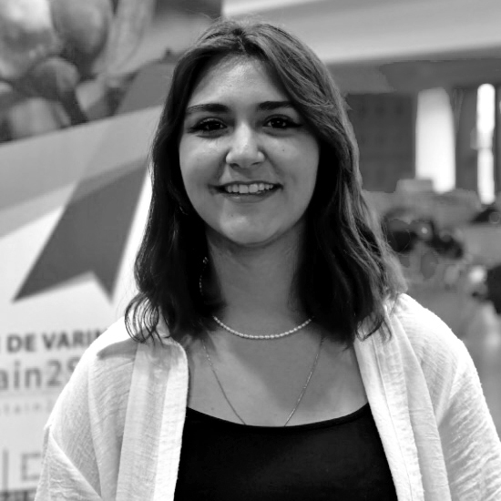
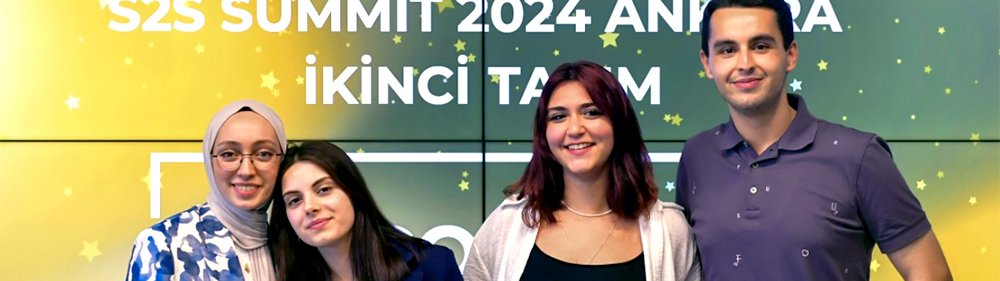
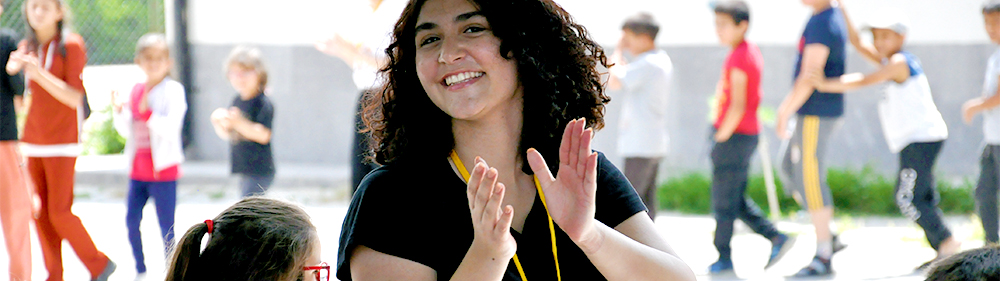

Education
Bilkent University
Faculty of Business Administration
- September 2021 - Ongoing [Anticipated Graduation: June 2025]
- Ankara, Turkey
- BSc in Business Administration & Management; CGPA: 3.35/4.00
- High Merit Scholarship Student; Standing: High Honor [2023-2024 Fall]
- Relevant Coursework: Corporate Finance, Organization Theory, Business Communications, Principles of Financial Accounting, Fundamentals of Marketing, Introduction to Data Analysis for Social Sciences, Introduction to Probability and Statistics I & II, Introduction to Sociology, Introduction to Psychology
- Currently Teaching Assistant for “Introduction to Computer Applications and Programming”; aid in teaching students how to code in the Python language and how to use Excel efficiently in class labs
-
Relevant School Projects:
-
Introduction to Data Analysis for Social Sciences: Wrote several Python scripts to analyse varied datasets,
some of which can be found on my GitHub with detailed explanations; for example:
- Lab 9: Analysed a mock-up set of customer data of over eleven thousand customers to pinpoint important marketing information based on age groups, income, education and marital status
- Lab 10: Plotted and visualised a mock-up dataset about song releases based on markers such as duration, danceability and energy to compare and contrast information about certain trends in genres
- Business Communications: Developed a new product for the market, named “Campus”, writing proposals and reports using practical business skills in presentations, and wrote proposal rejections for other projects in the class to give business-minded critique
- Fundamentals of Marketing (supervisor, Assoc. Prof. Ahmet Ekici): Developed and prepared a marketing plan for a socially responsible and sustainable product, “Smarty”
- Principles of Financial Accounting: Prepared a report of Statement of Financial Position, Multiple Step Income Analysis, and Financial Ratio Analysis of Mavi Co. as a term project
-
Introduction to Data Analysis for Social Sciences: Wrote several Python scripts to analyse varied datasets,
some of which can be found on my GitHub with detailed explanations; for example:
KEDGE Business School
Erasmus+ International Exchange
- January - May 2024
- Marseille, France
- Relevant Coursework: Geopolitics, Corporate Strategy, International Marketing, Supply Chain Management, Sustainable Development
-
Relevant School Projects:
- Corporate Strategy: Collaborated with my team where we analysed the Coca-Cola Company's brand and business using criteria such as Porter's Five Forces and PESTEL, then focused on its segmentation in the water sector, specifically for bottled water, did a SWOT analysis of its corporate growth strategy with of the company's strong brand equity, global distribution network, portfolio diversity and operational efficiency using the VRIO framework, and wrote a proposal for a diversification strategy based on the company's established strengths focusing on innovation and sustainability
- International Marketing: Conducted a detailed marketing plan for Michel et Augustin food company to enter the UK market considering international marketing principles
- Sustainable Development: Wrote a proposal and created an advertisement video about a new sustainable business model that aims to produce sustainable condiment packaging
Experience
Turkish Ministry of Treasury and Finance
Internship at the Directorate General of State-Owned Enterprises
- June - July 2024
- Ankara, Turkey
- Analysed the 2022-2023 income report table of the General Directorate of Tea Enterprises (Çay-Kur)
- Inspected the Organisation for Economic Co-operation and Development (OECD) and the Food and Agricultural Organization (FAO) of the United Nations joint “Agricultural Outlook 2023-2033” report and wrote a summary of their projections for Turkish grain production and wheat consumption, and highlighted the lack of detail in these projections compared to other countries' analyses
- Wrote bulletins for supervisors on the Turkish Statistical Institute's recent reports of the Price Index of Agricultural Products and Agricultural Input Price Index
- Learned about the differences between state-owned and privately-owned business enterprises' budget allocations and management, the 2024 Budgetary Law, and the 233 State Economic Enterprises Decree Law
- Gained experience in the use of Microsoft Word and Excel throughout bulletin and report creation
Turkish Ministry of Treasury and Finance
Internship at the Directorate General of Public Finance
- July - August 2023
- Ankara, Turkey
- Presented an IMF report about constructing a positive shock with option pricing to the Finance Vice-Principal
- Wrote an executive summary of the OECD 2023 report on the territorial impact of the earthquakes in Turkey
- Collected and organised financial data to assist in the treasury's daily operations after a period of observation
Leadership and Entrepreneurship

Sustain2Solve Summit 2024 Ankara: EcoEdu
- July 2024 - Ongoing
- Developed a business proposal with a teammate for “EcoEdu”, an educational application targeted towards primary and middle schoolers to teach about ecology and promote sustainable habits with special tasks and rewards using games and won second place at the July 2024 summit
- Created prototypes for informational videos, games that teach sustainable habits, and the reward store
- Presented our budget plan with membership plans for parents and private schools and sponsorship plans for potential third-party sponsors, organised tiered membership plans for both individuals and organisations
- Created a sponsorship profile for types of third-party organisations that would be suited to the product and target market such as sustainable brands for content and toy stores and bookstores for reward sponsorships
- Did market and competitor analysis and highlighted in our presentation the app's uniqueness in comparison
- Built a roadmap for the product from the incubation period to expansion to the Turkish market followed by international markets
- Started preparing for the expedited business incorporation process projected to take six months at the competition organiser Ankara Technology Bridge incubation centre formed by Bilkent Cyberpark and Ankara Metropolitan Municipality
- Take courses monthly on topics such as “Entrepreneurship in Turkey” and “Market Research and Customer Development” from Sustain2Solve and meet with mentors to develop prototype
Academic Enrichment and Extracurricular Activities
- Trained with voice actors and news correspondents in diction, studying effective breath control, voice usage, pronunciation, emphasizing the differences between written and spoken language and the importance of body language, voice and breath techniques, text analysis, emotional expression, and improvisation
- Took on-camera acting lessons from stage actors to hone skills such as managing on-camera anxiety and effectively conveying emotions and acted in a short film shot as part of the course as final practice
- Earned certification of completion from the Ministry of National Education General Directorate of Private Educational Institutions
Social Responsibilities

SevDer
Volunteer in Fundraising and Management
- October 2024 - Ongoing
- Aid the charity organisation that focuses on providing libraries and cultural event resources for underprivileged villages in the fundraising and management departments
- Visit the villages to build their libraries and personally aid in organising sports activities with children
- Coordinate educational games with children to increase their awareness of their civil rights
Social Awareness Projects Club
Member of Management Committee
- January 2023 - Ongoing
- Correspond with the Adiyaman Provincial Directorate of National Education and school teachers that reach out to our organisation to organise sending aid for over 20 schools affected by the 2023 earthquake according to their specific needs and handle logistics for clothes donations shipped to container cities in the affected regions
- Volunteered for the Bilkent University Education Projects UPDP (Assisting University Personnel Project) with the primary goal of providing equality opportunities for children from the families of Bilkent personnel who require but cannot afford private classes, and tutored students aged 7-18 with Mathematics and English
- Organized, categorized and packed book donations for libraries in rural schools to broaden access to information as part of the “The Sun Rises from the Village” Project; taught and tutored students from three villages in all age groups in theatre and sports
Skills
Technical
- Python
- Microsoft Office (Word, Excel, PowerPoint, Teams)
Language
- Turkish (Native)
- English (Advanced)
- German (A2)
- French (A1)
Interests
- Theatre
- Piano
- Drawing
- Hiking
- Taekwondo
- Pilates